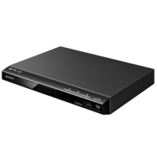
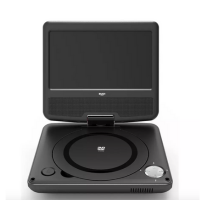
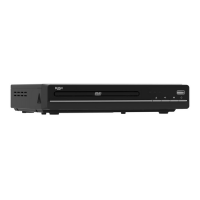

|  |
Sony DVPSR760 DVD Player with HD Upscaling
Specification
- Upscales to 1080p.
- Playback compatibility DVD, .
- 1 HDMI port.
- 1 USB port.
- Remote control - requires 2 x AA (included).
- Size H3.9, W27, D20.9cm.
- Weight 1kg.
|
|  |
Bush 7 Inch Portable In - Car DVD Player
Specification
- 7 inch.
- Swivel LCD screen screen.
- Resolution 800 x 480pixels.
- Brightness 120cd/m².
- Shock resistant.
- DVD region 2.
- Built-in rechargeable battery with 2 hours battery life during playback.
- Operated via car socket (cable included).
|
|  |
Bush HDMI DVD Player
Specification
- 2 channel audio output.
- Dolby True HD decoding.
- 1 HDMI port.
- 1 SCART socket.
- 1 USB port.
- Remote control - requires 2 x AAA (included).
- Size H3.8, W22.5, D20cm.
- Weight 1.5kg.
|
|
|